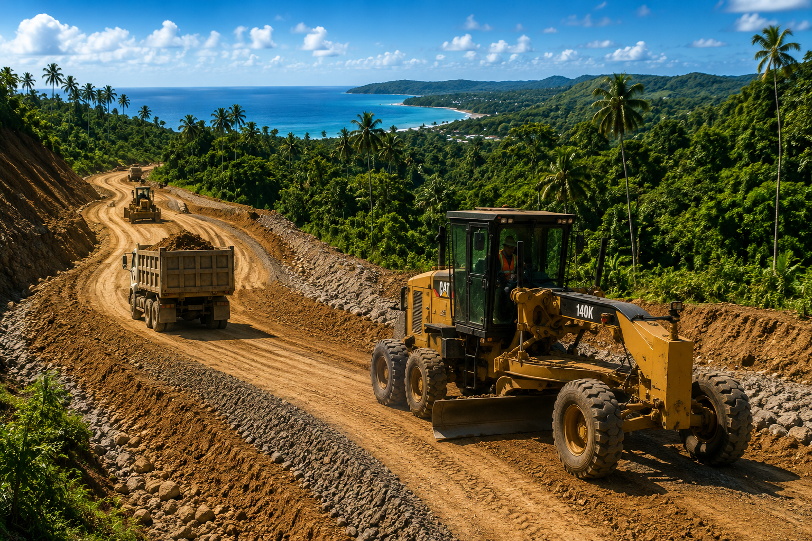

Infraestructura
Desarrollo de Vía Rural
ClientePromotora Torio S.A.
UbicaciónPenínsula de Azuero
EstadoEn Desarrollo
Nota del Proyecto
Vía rural e infraestructura de acceso que apoyan el valor de
desarrollo a largo plazo.